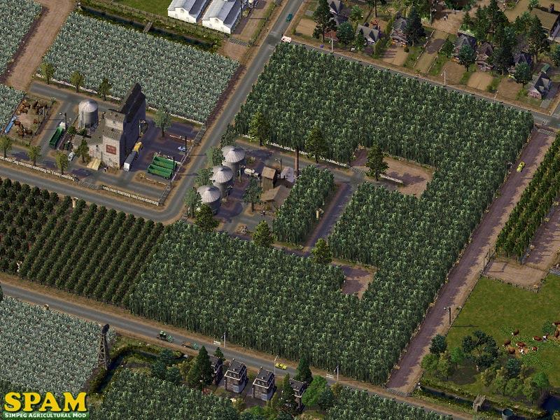

SimPeg Agricultural Mod
GETTING READY FOR THE AGRICULTURAL REVOLUTION
What is this thing?
The SimPeg Agricultural Mod (SPAM) is an absolute, total and complete replacement for the game-default farming system.

The default system was never really finished before game release and was, in fact, designed to be short-lived and used only initially in starter cities. The game, as it progresses, actually is designed to kill off all desire and usefulness for farming.
We changed all that.
Not only have we changed how all the farms look... but we also changed how they play. Originally in a city, you could hug a tree... or kiss the sky with glass and steel. Now... you can do both.
At its most basic function and goal, the SPAM is an IND MTP Replacement Mod... similar to the RES and COM MTP replacement mods. Its primary goal is to give an MTP-ish look and feel to the game's default farm lots.
Read on to find out more about the features and objectives of this mod.